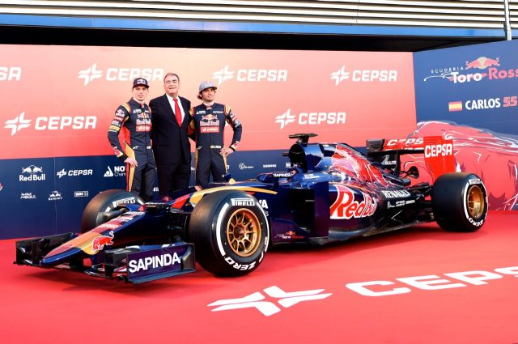
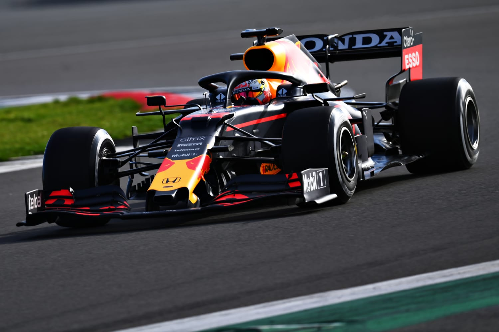

História de Max na Scuderia Toro Rosso
Max Verstappen começou na Fórmula 1 em 2015, aos 17 anos de idade. Sua contratação pela Toro Rosso havia sido confirmada em 18 de agosto de 2014, depois de ele se juntar ao programa de formação de pilotos da Red Bull Racing, o Red Bull Junior Team.
Na sua primeira corrida na F1, no GP da Austrália de 2015, Max Verstappen tinha apenas 17 anos e 166 dias, tornando-se o piloto mais novo da história a disputar uma prova da categoria.
Verstappen abandonou a corrida em sua estreia na F1 por causa de problemas mecânicos, mas, logo no seu segundo GP, ele se tornou o mais jovem piloto da história da Fórmula 1 a somar pontos. Aos 17 anos e 180 dias, o holandês foi o sétimo colocado na Malásia, depois de largar na sexta colocação.
Max Verstappen encerrou a temporada 2015 da Fórmula 1 em 12º lugar no mundial de pilotos, com 49 pontos somados.
Em 2016, ele iniciou a temporada como companheiro de Carlos Sainz na Toro Rosso, mas sua participação na equipe durou apenas 4 corridas. Antes do GP da China, a Red Bull anunciou sua contratação, substituindo o russo Daniil Kvyat, que retornou à Toro Rosso.
O jovem gerou crítica do ex-campeão da categoria Jacques Villeneuve ao dizer que "era a pior coisa para a Fórmula 1", ao entrar para a Equipa Toro Rosso. Em 31 de agosto colidiu um modelo Red Bull RB8 durante uma exibição nos Países Baixos.
No entanto, logo na sua segunda corrida na categoria alcançou o sétimo lugar no Grande Prêmio da Malásia de 2015 tornando-se o mais jovem piloto a pontuar na Fórmula 1, com dezessete anos e 180 dias de idade.
O carro de 2015 ja faz parte da era híbrida de Formula 1, cujas características do
STR10 são:
- Motor Renault Energy F1-2015
- Caixa de 8 relações semiautomáticas
- 691Kg

O carro onde foi campeão do mundo de F1, foi o impressionante mono lugar da Red Bull Racing Team
RB16B:
- Honda RA621H 1.6 V6 turbo híbrido
- Caixa de 8 relações sequenciais
- 743Kg
História de Max na Red Bull
Em 5 de maio de 2016, dias após o Grande Prêmio da Rússia, a equipe Red Bull promoveu a troca de Max por Daniil Kvyat.
Após o anúncio, revelou que ficou muito ansioso ao iniciar na equipe a ponto de ficar três noites sem dormir. A mudança de equipe fez com que seu pai também anunciasse que se afastaria da gerência da carreira de Max por acreditar que este alcançou o lugar almejado.
Na sua primeira corrida na equipe, no Grande Prêmio da Espanha de 2016, obteve sua melhor posição de largada — quarto lugar. Na corrida assumiu o segundo posto após a colisão entre os líderes Lewis Hamilton e Nico Rosberg. Permaneceu mais tempo na pista antes de sua segunda troca de pneus e assumiu a liderança na volta 44 após a troca de pneus de Daniel Ricciardo. Manteve-se na liderança mesmo sob pressão de Kimi Räikkönen da Ferrari até a vitória. Com este resultado, alcançou quatro marcas históricas na Fórmula 1: o mais jovem piloto a liderar uma prova, subir ao pódio e vencer uma corrida; por extensão, tornou-se também o primeiro neerlandês (holandês) a vencer na Fórmula 1.
No dia 03 de agosto de 2019, Max conquistou sua primeira pole position no Grande Prêmio da Hungria de 2019 e se tornou o primeiro piloto da Holanda a cravar uma pole e centésimo piloto a largar na posição de honra de um grid. É também a primeira pole da Honda como fornecedora de motores desde o Grande Prêmio da Austrália de 2006, com Jenson Button.
No dia 5 de setembro de 2021, Verstappen venceu de ponta a ponta pela primeira vez em casa no Grande Prêmio dos Países Baixos.
No dia 12 de dezembro de 2021, Verstappen ultrapassou Lewis Hamilton na última volta do Grande Prêmio de Abu Dabi, sagrando-se campeão mundial de Fórmula 1. Os dois pilotos estavam empatados no número de pontos, com 369,5 pontos cada um.
Pode ouvir o som dos motores da era híbrida:

![svgImg]()

![svgImg]()
![svgImg]()